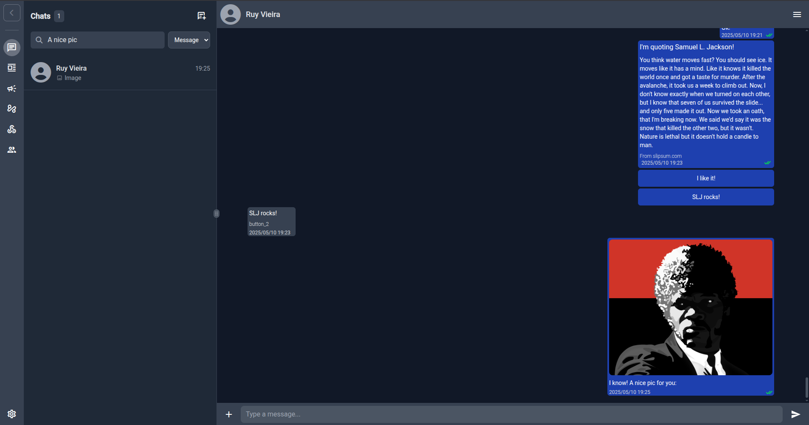

wacraft Build WhatsApp Cloud apps in minutes
The fastest way to give your team an UI & API for the official WhatsApp Cloud API—powered by Go, Angular and Docker.
Why wacraft? üöÄ
| üöÄ Feature | üí° Why it matters |
|---|---|
| üñ•Ô∏è Familiar UI | Angular front‑end that feels just like WhatsApp¬†Web‚Äîusers need zero training. |
| ⚙️ Go‑powered backend | High‑performance REST + Webhook server engineered for massive scale. |
| üîå Automation‑ready | One‑line integrations with workflow engines like Node‑RED or n8n. |
| üõ†Ô∏è Open & extensible | MIT‑licensed‚Äîfork it, extend it, embed it. |
| ❤️ Community‑driven | Extra features & priority support available via donation plans. |
✨ Feature Highlights
1 — Angular UI
Manage conversations, templates, contacts, webhooks and users in a clean interface. Check the UI Walkthrough to see how it works! 
2 — Go API
https://github.com/Astervia/wacraft-server
REST & WebSocket endpoints for everything the UI does—perfect for CI/CD and custom integrations. Also includes OpenAPI specs for easy client generation.
3 — Real‑time Webhooks
Receive and react to WhatsApp events the moment they happen.
4 — Automation Tools
Drag‑and‑drop flows for Node‑RED or n8n let non‑devs build chatbots in minutes.
5 - And more
Check Product Overview and UI Walkthrough for a list of features and how they work.
üèÅ Getting Started
- Grab your Meta credentials
- Create/fill your
.env(copy the Minimal Dev block) - Run the local stack
- Setup the WhatsApp Webhooks
Already have prod infra? Jump directly to the Fast Production Deploy.
☸ Deployment Options
| Scenario | Guide |
|---|---|
| Local Dev | quickstart/local.md |
| Fast Production Deploy | quickstart/production.md |
| Production (Docker Compose) | deploy/docker-compose.md |
| Binary + Vercel Front‑end | deploy/binary-vercel.md |
| Node‑RED Integration | deploy/node-red.md |
You can also hit Deploy Overview to see a full list of deployment options and choose what works best for you.
üîë Configuration Overview
All config happens via environment variables. Check Getting Meta Credentials to setup your Meta application and see the Environment Variables Reference for the full table.
üí¨ Need help?
- GitHub Issues – bug reports & feature requests
- Unlock new features / Consulting – wacraft@astervia.tech
Made with art by Astervia.
σΔγ